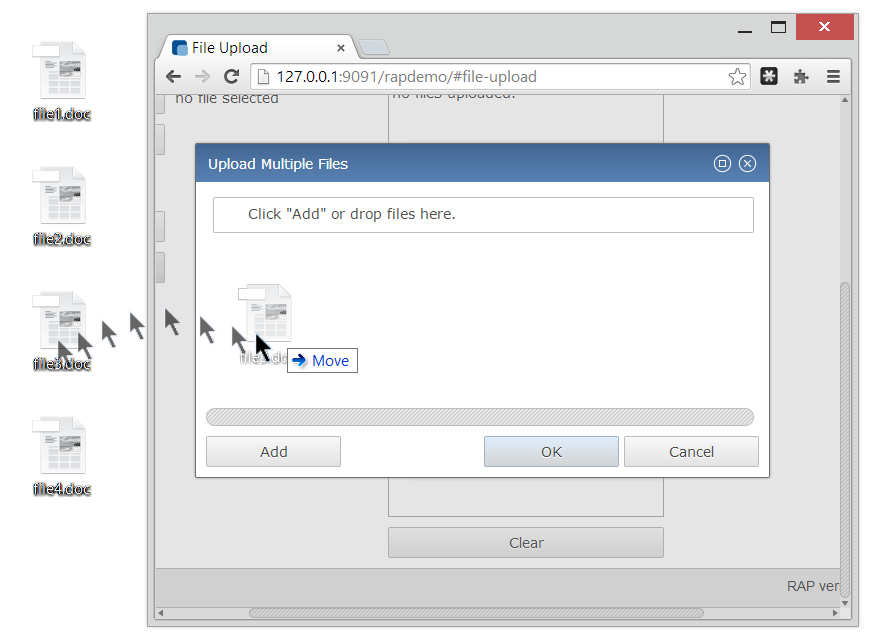
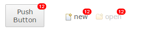

The file dialog and file upload components have been moved from the RAP Incubator to the RAP repository. FileDialog supports not only single and multi file upload with a clean user interface, but since recently also file drag and drop.
In the second milestone of RAP 3.0 we added badge support for TabItem. Now, this has been extended to Button and ToolItem, both with style SWT.PUSH.
To set a badge, use:
button.setData( RWT.BADGE, "12" );
In RAP 3.0, the web client will support the following web browsers/rendering engines:
In some older browsers RAP may continue to work, but without additional modern HTML5/CSS3 features.